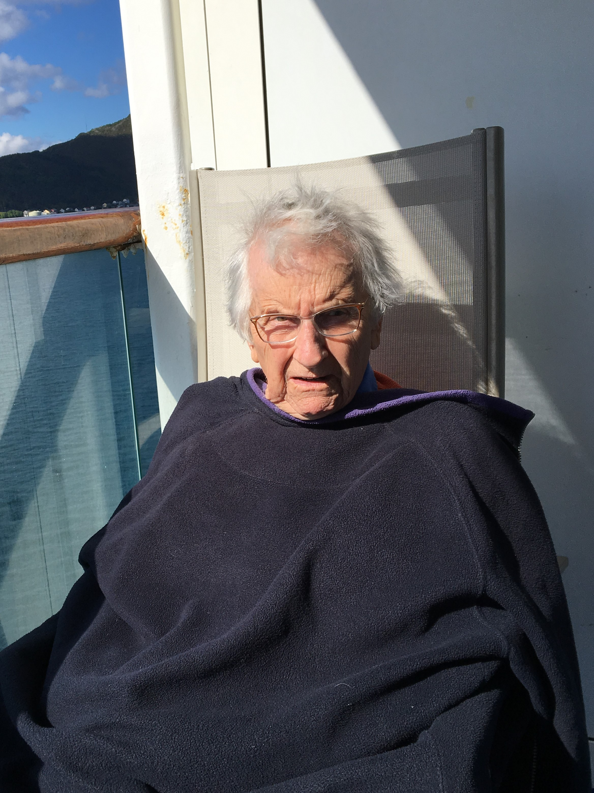
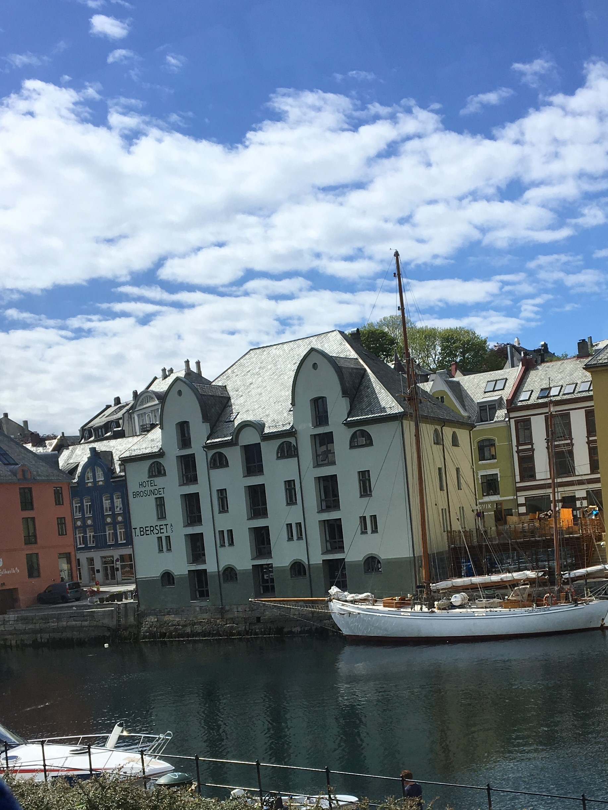

Norway Cruise 2017
Monday June 5th 2017
Aurora steamed North overnight with the Norwegian coast on her starboard site throughout before altering
round onto a more North easterly heading to make approaches towards Alesund. It remained rather bright throughout the night with sunset
occurring around 22.30 and sunrise at around 4.00.
I woke up early, about 6.00am, and looked out of the window, to be greeted by gorgeous views of the Norwegian
coastline. Instead of going back to bed, I got up, got dressed and soaked in the gorgeous views, sat on the
balcony.
With the assistance of the local pilot, the Captain manouevered the ship to her mooring in the port of Alesund

Alesund is in the fylke (county) of More og Romsdal in western Norway. It lies on seven islands which are connected by bridges and
sub-sea tunnels. Alesund dates from the 9th century when Rollo (Rolf) the Ganger, who later founded the Duchy of Nornmandy and was an
ancestor of William the Conqueror, had his headquarters nearby. For many years the settlement was just a small fishing port, and it was
not until 1848 that township status was granted.

On 23 January 1904 most of Alesund went up in flames when a disastrous fire reduced 850 wooden houses to ashes, and left 10,000 peple
homeless. Only four years later, Art Nouveau buildings - an architectural style influenced by the German Jugendstil - had replaced the
old Alesund. Kaiser Wilhelm II, Emperor of Germany and King of Prussia, was a regular visitor to this region and contributed very
generously to the rebuilding programme. German troops occupied Alesund during WWII, but local fishing boats managed to carry many
Norwegian partisans across the North Sea, in boats that became known as Shetland Buses.
Alesund is Norway's leading fishing port and a regional commercial centre. It is close to the Sunmore Alps. The
Fjellstua Viewpoint on Mount Aksla is accessed by a road built in WWII by forced
labourers, as it gave great views of approaching ships.
Mum and I had booked an afternoon excursion, Leisurely Alesund, which took us on a bus tour around Alesund, including a visit to the
viewpoint on Mount Aksla. The tour guide was very informative, and the scenery gorgeous. The bridges and sub-sea tunnels were the
result of the economic boom from the oil and gas industry. They are all toll charging. One of the tunnels links to the island on
which the airport was built. Before the tunnel, flights were missed because the ferry couldn't sail or was delayed because of bad
sea conditions. The tiny island of Giske was the seat of a Viking King woho made his fortune charging for safe passage past his island.
Got back on board just in time for our afternoon tea.
We set off early in the evening, enroute to UNESCO World Heritage Listed Geirangerfjord.
{kind=link}
{kind=link}
{kind=link}
{kind=link}
{kind=link}
{kind=link}